2024_September_T40
AI
groqR v0.0.1: Provides a suite of functions and RStudio Add-ins leveraging the capabilities of open-source Large Language Models (LLMs) to support R developers. Features include text rewriting, translation, and general query capabilities. Programming-focused functions provide assistance with debugging, translating, commenting, documenting, and unit testing code, as well as suggesting variable and function names. Look here for examples.
Archaeology
eratosthenes v0.0.2: Estimates unknown historical or archaeological dates subject to relationships with other dates and absolute constraints, derived as marginal densities from the full joint conditional distribution. Includes rule-based estimation of the production dates of artifact types. See Collins-Elliott (2024) for background and the vignettes on aligning relative sequences and gibbs sampling for archaeology dates.
Biology
pcvr v1.0.0: Provides functions to analyse common types of plant phenotyping data and asimplified interface to longitudinal growth modeling and select Bayesian statistics. See Kruschke (2018), Kruschke (2013) and Kruschke (2021) for background on the Bayesian methods. There are four vignettes including Bellwether workflow and Longitudinal Growth Modeling.
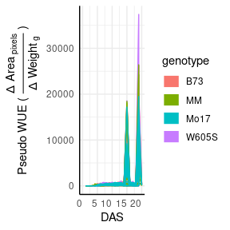
orthGS v0.1.5: Provides tools to analyze and infer orthology and paralogy relationships between glutamine synthetase proteins in seed plants. See the vignettes Searching for Orthologous and Unraveling the Hiden Paralogous.
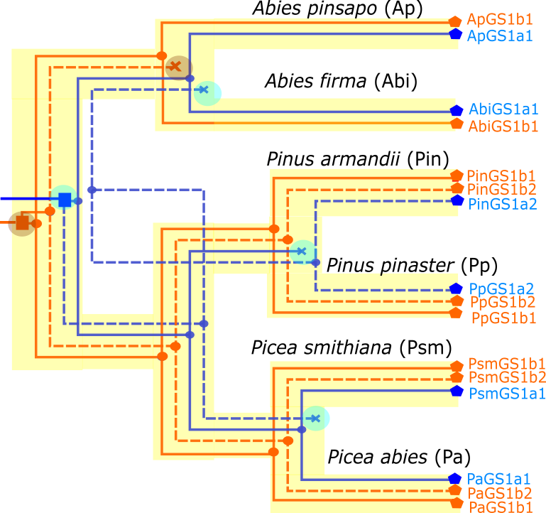
Computational Methods
XDNUTS v1.2: Implements Hamiltonian Monte Carlo for both continuous and discontinuous posterior distributions with customisable trajectory length termination criterion. See Nishimura et al. (2020) for the original Discontinuous Hamiltonian Monte Carlo; and Hoffman et al. (2014) and Betancourt (2016) possible Hamiltonian Monte Carlo termination criteria. The vignette offers examples.
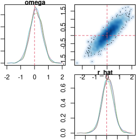
Data
clintrialx v0.1.0: Provides functions to fetch clinical trial data from sources like [ClinicalTrials.gov](https://clinicaltrials.gov/} and the Clinical Trials Access to Aggregate Content database that supports pagination and bulk downloads. See the vignette.
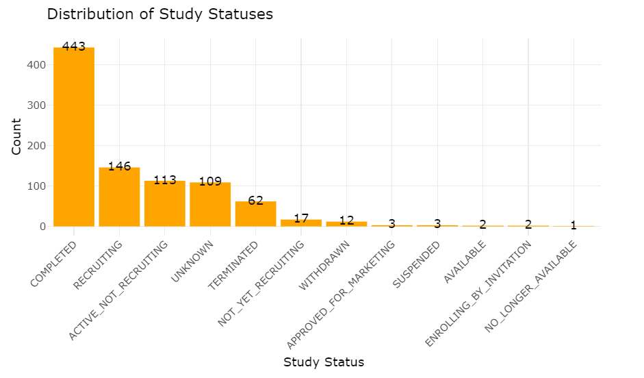
ColOpenData v0.3.0: Provides tools to download and wrangle Colombian socioeconomic, geospatial,population and climate data from DANE at the National Administrative Department of Statistics and IDEAM at the Institute of Hydrology, Meteorology and Environmental Studies. It solves the problem of Colombian data being issued in different web pages and sources by using functions that allow the user to select the desired database and download it without having to do the exhausting acquisition process. There are six vignettes including How to download climate data and Population Projections.
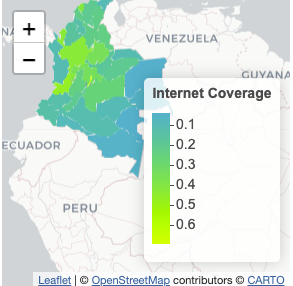
modgo v1.0.1: Provides functions to generate synthetic data from a real dataset using the combination of rank normal inverse transformation with the calculation of correlation matrix and completely artificial data may be generated through the use of Generalized Lambda Distribution and Generalized Poisson Distribution. See the vignette.
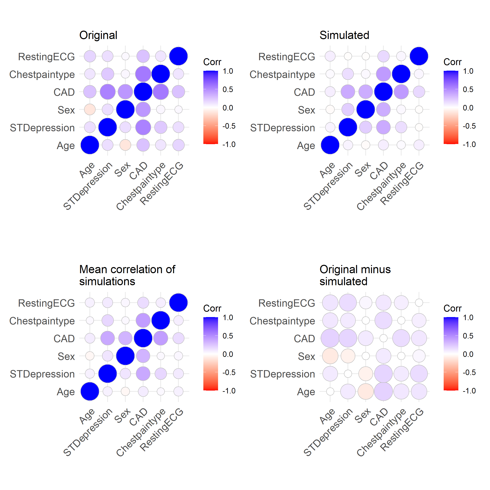 ### Ecology
douconca v1.2.1: Implements the two step double constrained correspondence analysis (dc-CA) for analyzing multi-trait multi-environment ecological data described inter Braak et al. (2018). This algorithm combines and extends community or sample and species-level analyses.
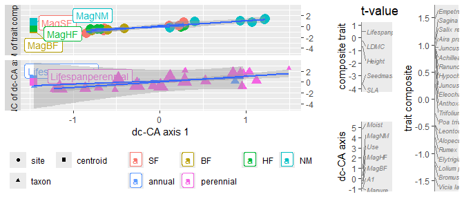
GeoThinneR v1.1.0: Provides efficient geospatial thinning algorithms to reduce the density of coordinate data while maintaining spatial relationships. Implements K-D Tree and brute-force distance-based thinning, as well as grid-based and precision-based thinning methods. See Elseberg et al. (2012) for background and the vignette for examples.
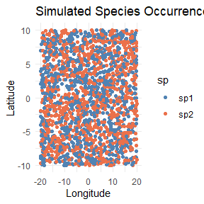
Genomics
easybio v1.1.0: Provides a toolkit for single-cell annotation with the CellMarker2.0 database and streamlines biological label assignment in single-cell RNA-seq data and facilitates transcriptomic analysis, including preparation of TCGA and GEO datasets, differential expression analysis and visualization of enrichment analysis results. See Wei Cui (2024) for details and the two vignettes bulk RNAsewuence workflow and Single Cell Annotation for examples.
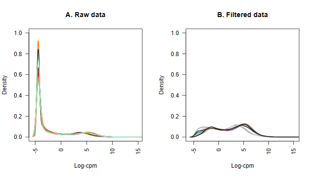
GenoPop v0.9.3: Implements tools for efficient processing of large, whole genome genotype data sets in variant call format including several functions to calculate commonly used population genomic metrics and a method for reference panel free genotype imputation. See Gurke & Mayer (2024) for background and the vignette to get started. 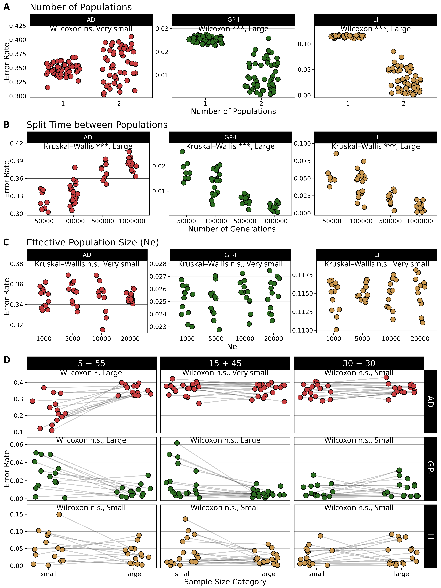
SuperCell v1.0: Provides tools to aggregate large single-cell data into metacell dataset by merging together gene expression of very similar cells See the vignettes Example of SuperCell pipeline and SuperCell runs for different samples.
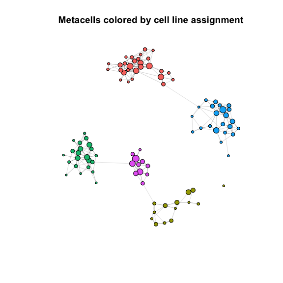
Lingusitics
maxent.ot v1.0.0: Provides tools to fit Maximum Entropy models to phnology data. See Mayer, Tan & Zuraw and the vignette for an overview.
Machine Learning
dsld v0.2.2: Provides statistical and graphical tools for detecting and measuring discrimination and bias, be it racial, gender, age or other. Detection and remediation of bias in machine learning algorithms. See the Quick Start Guide.
Medicine
SurvMA v1.6.8: Implements a model averaging approach to predict personalized survival probabilities by using a weighted average of multiple candidate models to approximate the conditional survival function.Two scenarios of candidate models are allowed: the partial linear Cox model and the time-varying coefficient Cox model. See Wang (2023) for details and look here for an example.
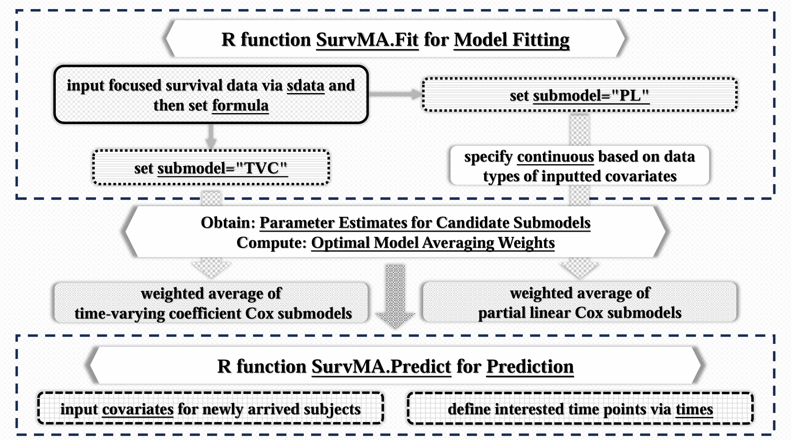
wintime v0.2.0: Provides methods to perform an analysis of time-to-event clinical trial data using various methods that calculate and compare treatment effects on ordered composite endpoints. See Troendle et al. (2024) for the details of the methods and the vignette for examples.
Pharma
sdtm.oak v0.1.0: Provides a framework to develop CDISC, SDTM datasets in R and potentially automate the process. There are six vignettes including on on Algorithms.

Statistics
dpasurv v0.1.0: Provides functions to implement dynamic path analysis for survival data via Aalen’s additive hazards model. See Fosen et al., (2006) for details. There is an oveview and a vignette on plotting with ggplot2.
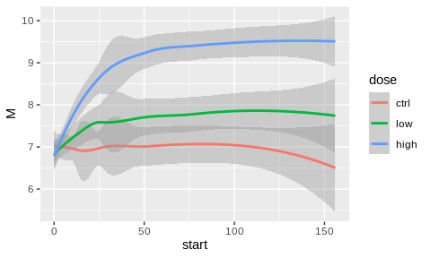
LearnVizLLM v1.0.0: Implements tools to summarize the characteristics of linear fixed models without data or a fitted model by converting code code for fitting nlme::lme() and lme4::lmer() models into tables, equations, and visuals. See the vignette for details.
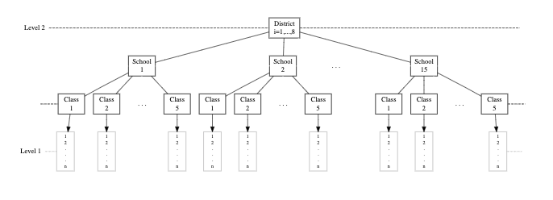
lnmixsurv v3.1.6: Combines the mixture distributions of Fruhwirth-Schnatter(2006) and the data augmentation techniques of Tanner and Wong (1987) to implement Bayesian Survival models that accommodate different behaviour over time and consider higher censored survival times. There are five vignettes including a [Get started guide}
Utility
fctutils v0.0.7: Provides a collection of utility functions for manipulating and analyzing factor vectors in R. It offers tools for filtering, splitting, combining, and reordering factor levels based on various criteria. See the vignette.
pikchrV0.97 : Provides an interface to pikchr q markup language for creating diagrams within technical documentation. See the vignette for examples.
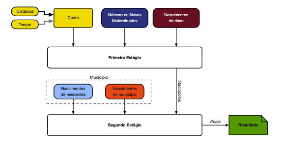
rnix v0.12.4: Provides tools to run the nix package manager. There are fifteen vignettes including a Getting Started Gude.
qs2 v0.1.1: Provides tools to efficiently serialize R objects using one of two compression formats: the qs2 format, which uses R serialization while optimizing compression and disk I/O, and the qdata format which uses custom serialization to achieve slightly faster performance and better compression. qs2 format can be directly converted to the standard RDS. See the vignette
Visualization
ggalign v0.0.4: Implements an extension to ggplot2 that offers various tools for organizing and arranging plots including the ability to consistently align a specific axis across multiple ggplot objects. There are seven vignettes including Examples and Heatmap Layout.
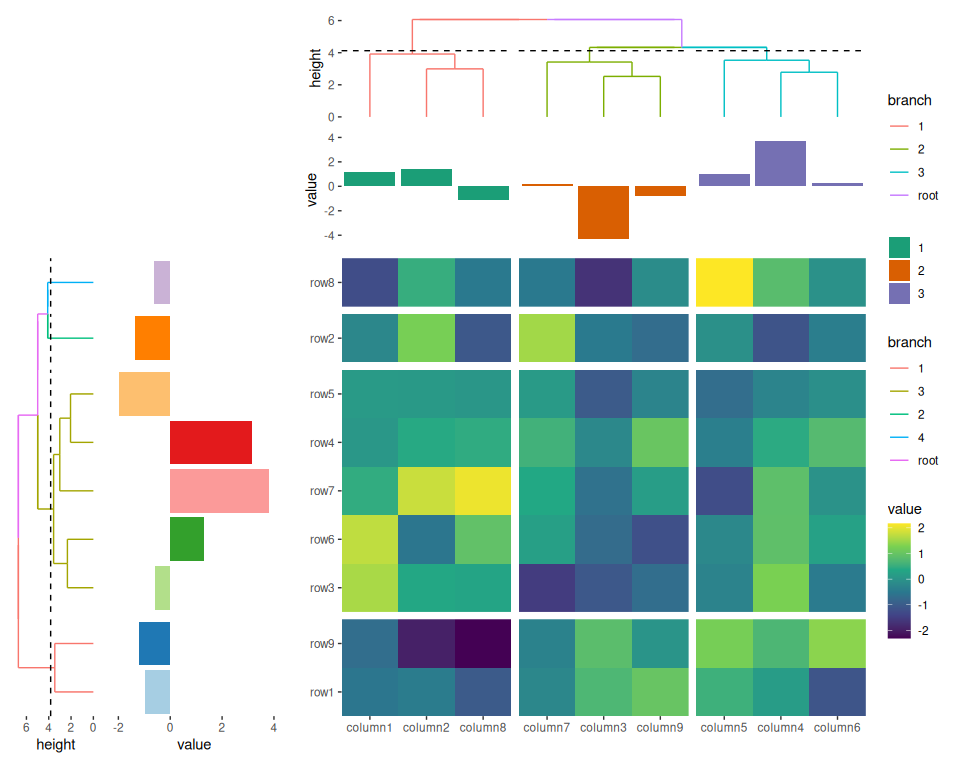
sfcurv v1.0: Implements all possible forms of 2x2 and 3x3 space-filling curves, i.e., the generalized forms of the Hilbert curve, the Peano curve and the Peano curve in the meander type. Look here for ec=xamples.
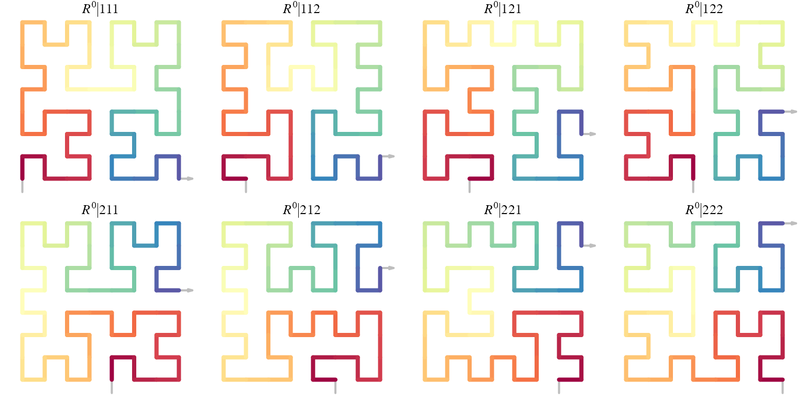
surreal v0.0.1: Implements the Residual (Sur)Realism algorithm described by Stefanski (2007) to generate datasets that reveal hidden images or messages in their residual plots. See README for examples.
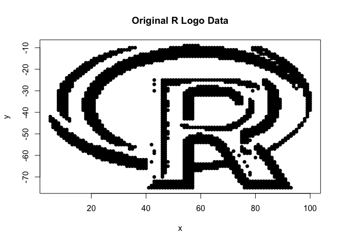 survSAKK v1.3.1: Provides functions to incorporate various statistics and layout customization options to enhance the efficiency and adaptability of the Kaplan-Meier plots. See the vignette.
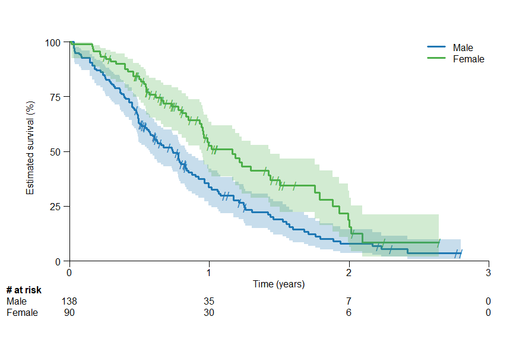